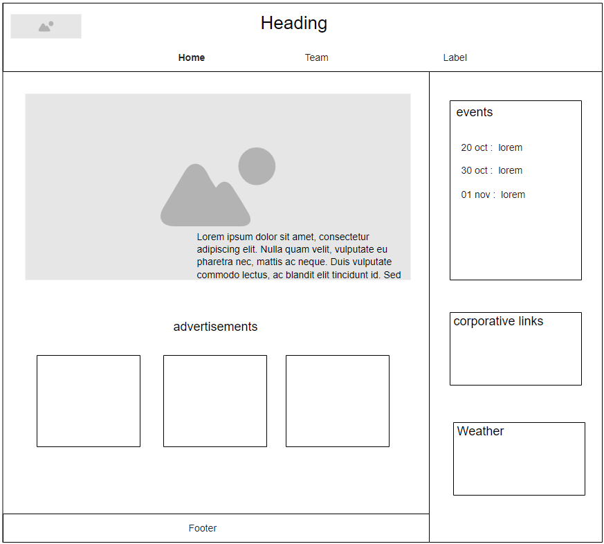
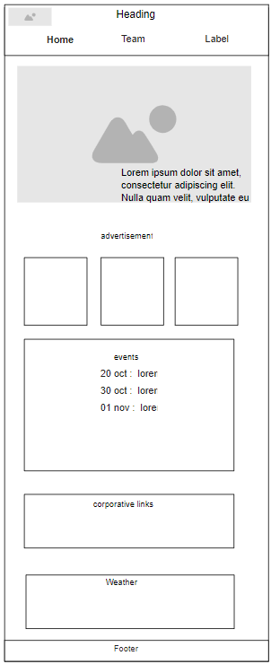

Website Plan for Team Communication and Collaboration
Geatechnical Support Services Team
The name represents a central platform designed to enhance communication, collaboration, and planning within a work team.
Optional domain: gss-workspace.com
Site Purpose
This site will act as a virtual workspace where team members can view upcoming events, communicate through real-time messaging, and celebrate team milestones. It will improve internal communication and project organization through collaborative tools.
Scenarios
- How can I see the upcoming birthdays and team events?
- Where can I find the news in the team?
- How can I suggest new team-building activities?
Color Schema
The color scheme selected are the corporative colors .
- Main Color: #6C6E7A (Gray)
- Second Color: ##F78E1E (Orange)
Typography
The typography is chosen to ensure readability and a modern look.
- Headings: 'Montserrat', sans-serif
- Body Text: 'Open Sans', sans-serif
Wireframe
The layout of the homepage is designed to be intuitive and responsive.
- Mobile View: A single-column layout with the navigation at the top followed by key sections .
- Desktop View: A two-column layout where the navigation remains at the top, but sections are displayed side-by-side for better visibility.
A sketch of the wireframe is below:

